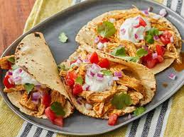

Fiesta Slow Cooker Shredded Chicken Tacos

Easy Make
This chicken tacos recipe is easy to make in a slow cooker.
Spoon the filling into warm tortillas for a very tasty meal.
Ingredients
- 1 cup chicken broth
- 3 tablespoons taco seasoning mix
- 1 pound skinless, boneless chicken breats
Steps
- Combine chicken broth and taco seasoning mix in a bowl
- Place chicken in a slow cooker.
- Pour chicken broth mixture over chicken
- Cook on low for 6 to 8 hours. Shred chicken
- Spoon into warmed corn tortillas. Garnish with shredded lettuce,
chopped tomatoes, and thinly sliced red onions, if desired.